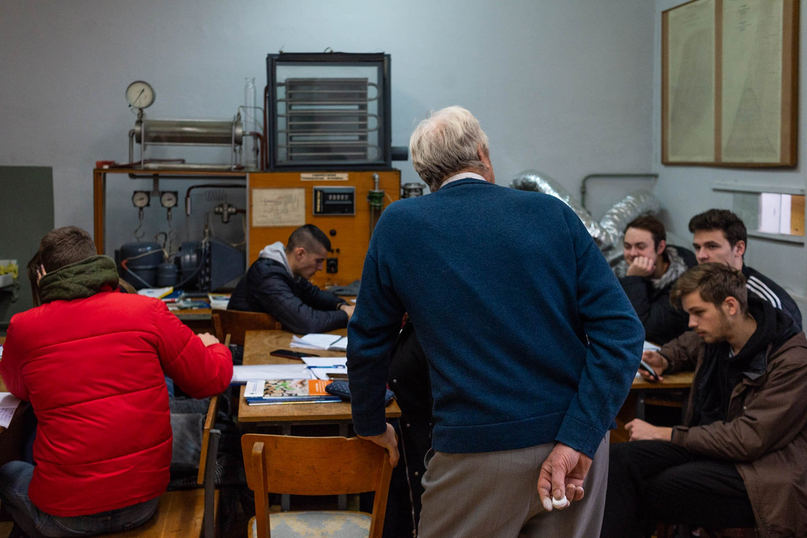

- український щоденник
-
Ти, мабуть, думаєш: чому ця дивна дівчина говорить українською?
Я хотіла б стати бабцею. Хто б не хотіла стати бабцею? Вони дуже маленькі, дуже сильні, дуже милі й дуже квадратні. Усі знають, що справжні бабусі говорять українською.
Але серйозно - чому?
Я почала, бо хотіла пожартувати над друзями кілька років тому. Ще у 2018 році перша фраза, яку я вивчила, була «ненавиджу». Коли я зустрічала українця, я тиснула йому руку і казала: «ненавиджу». Але ж ти знаєш, для мене це просто звуки. О, як це гарно звучить! «ненавиджу» звучить, як поезія для американця. Навіть слово «молоко» - англійською це просто "milk", а українською - молоко.
Зрештою я зустрічалася з українцем, і він розповів мені про борщ. Як можна вивчати українську й не знати борщу? Це було під час пандемії, у січні, і він розповів мені про зелений борщ - і що це смак весни. Я уявляла, що він на смак, як ранкова роса на траві, коли розквітають вишні.
Мені здається, якби існувала українська версія «Матриці», там була б стара бабця з двома мисками, і вона б казала: «Ти обираєш червоний чи зелений?»
У США неможливо знайти зелений борщ, бо в нас немає щавлю. Тож я намагалася його виростити - не вийшло. Потім я чекала, поки пандемія закінчиться, і поїхала аж у Літл Одесу в Брукліні, і там спробувала його - і це було огидно.
У січні 2024 року я була в Парижі на змаганнях із джиу-джитсу. Я запитала свою подругу Марусю, чи могла б вона допомогти мені поїхати в Україну. Який сенс навчатися чотири роки, якщо ніколи не маєш нагоди говорити? Нарешті я могла використати всі слова, які вивчила - наприклад, «промислове сільське господарство».
Її дідусь був на пенсії, колишній професор промислової інженерії з Київського політехнічного інституту. Він був першим, хто почав викладати українську після падіння Радянського Союзу.
Тепер він жив сам, зі своїм собакою та котом. Нарешті я могла зустріти справжнього дідуся! Івана Івановича!
Він сумував за студентами й запропонував допомогти мені з українською. Ми пішли на вечерю біля станції метро «Олімпія» - у кримський ресторан. Він був чудовий, такий наполегливий під час вечері. Він говорив французькою і трохи китайською, і ми грали у поліглотичний телефон. Мене зачарував цей чоловік у свої сімдесят.
Наступного дня ми пішли на прогулянку з його собакою. Це було справжнє випробування - я запитала, як звуть собаку, і намагалася сказати, що він його тінь. Як, чорт забирай, пояснити, що таке тінь?
Він зварив картоплю і сказав, що диявол - це сіль. Потім повільно змусив мене читати одну зі своїх лекцій про вітряки.
Його квартира була повна скарбів з років, проведених на Мадагаскарі - корали, карти, усе як у домі мандрівника.
Коли я повернулася додому того вечора, я плакала. Мене щось дуже глибоко зачепило - він був таким чудовим чоловіком. І я подумала, що тисячі юнаків ніколи не стануть дідусями.
